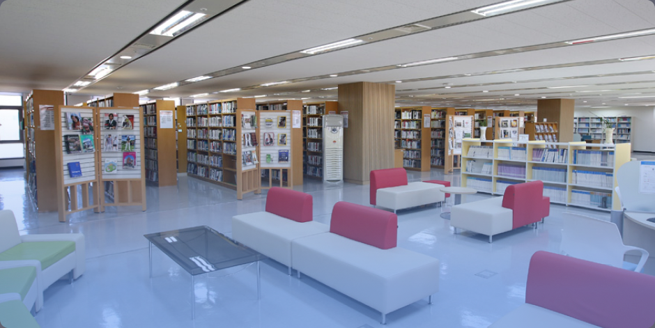
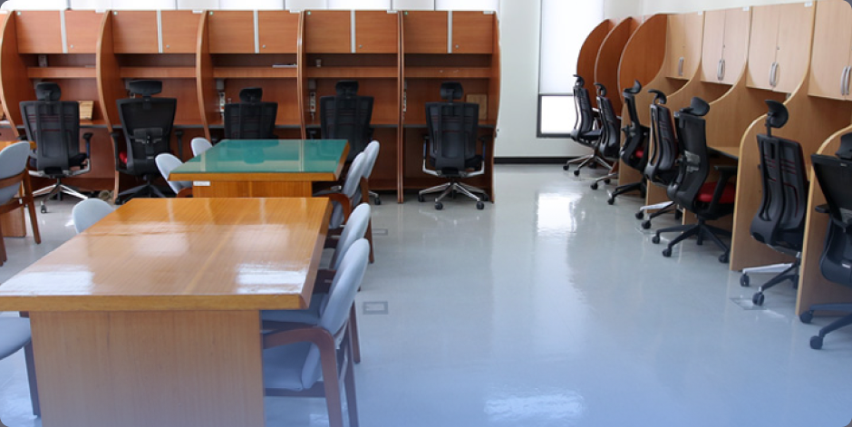

기관소개
도서관
살기 좋은 지방시대를 선도하는 핵심인재 양성을 위해!
지방자치인재개발원 도서관에 오신 것을 환영합니다.
지방자치인재개발원 도서관은
국가 및 지방자치단체의 전문 행정인력 양성과 21세기 지식기반 사회구현을 위해 지방공무원 교육 및 연구활동을 지원하고 있으며, 교육자료를 비롯하여 정부간행물, 정책·연구보고서 및 일반 교양도서 등 다양한 자료와 Scholar등 학술정보 검색 환경을 제공하고 있습니다.

자료실
-
면적
739㎡
-
규모
장서 9만여권, 정기간행물 18종, 신문 20종
-
시설
서가 40개, 검색용 컴퓨터 3대, 복사기 3대, 열람석 94석, 소파 12개, 컴퓨터 5대, 프린터 2대
*국회도서관, 국립중앙도서관, 교보문고(Scholar) 등 학술정보 검색 가능

자유열람실
-
면적
125㎡
-
시설
열람석 45석 (개방형 24석, 개인용 21석), 컴퓨터 7대, 프린터 2대, 냉·온풍기 1대 등
이용안내 (관련문의: 063-907-5382)
자료실 운영시간
- 09:00~18:00(월~목), 09:00~16:00(금) ※ 토요일, 일요일, 법정공휴일 휴무
도서대출
- 대상 : 교육생 및 인재원 직원
- 절차 : 도서관을 방문하여 회원가입신청서 작성(증빙자료제시) ※ 교육생(이름이 기재된 명찰), 직원(공무원증)
- 대출권수 : 1인 5권
- 대출기간 : 20일(1회 한하여 10일 연장 가능)
자유열람실(교육생 및 인재원 직원 대상)
- 운영시간 : 07:00~22:00 연중무휴
페이지 만족도 및 담당부서 안내
현재 페이지에 만족하십니까?
페이지 내용과 사용 편의성에 대한 의견을 들려주세요.